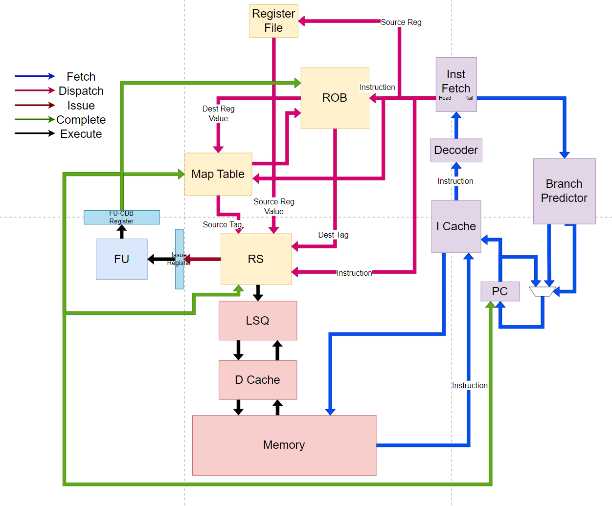
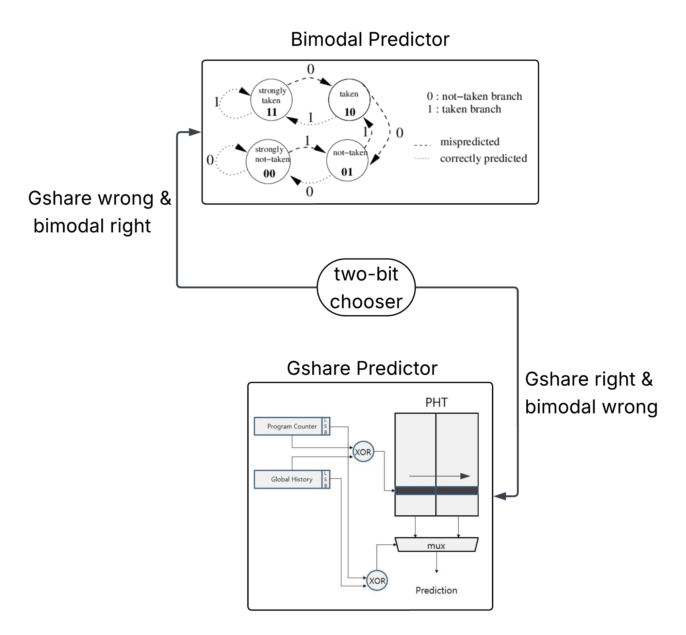
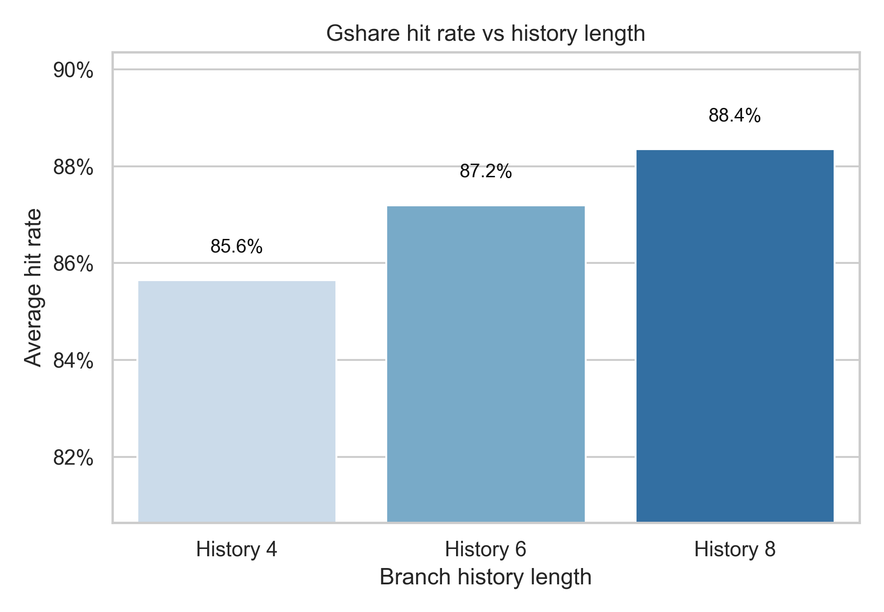
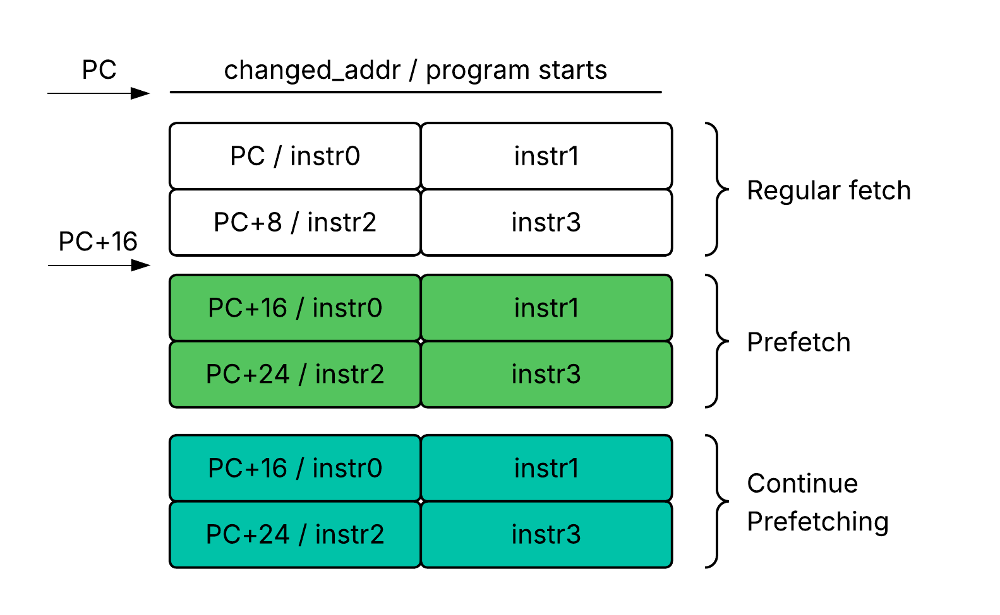
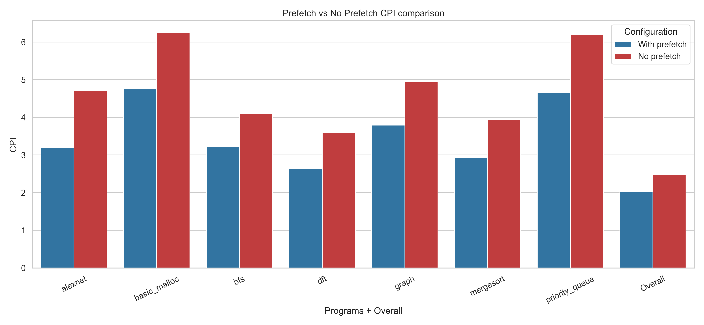
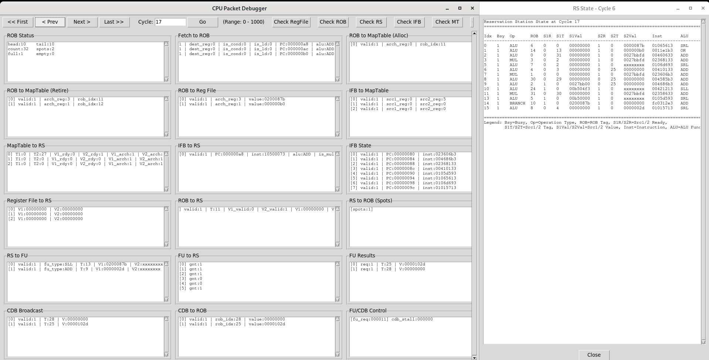

Three-Way Superscalar Out-of-Order RISC-V Processor
P6-style microarchitecture · SystemVerilog · University of Michigan EECS 470, Fall 2025 · Team 12 "OoOps" (Lingxiao Yang, Rui Jiang, Runshuang Guo, Juntao Wu) · Final report (PDF)
A three-wide out-of-order core featuring register renaming, reservation-station scheduling, a reorder buffer, a speculative load/store queue, a hybrid branch predictor, instruction prefetching, and separate instruction and non-blocking data caches.
1. Microarchitecture explorer
Select a block to see how it works.

2. Branch predictor playground
The real predictor is a hybrid of a bimodal table and a GShare table with a two-bit chooser (64 entries each). Choose a branch behavior and history length to compare the three schemes on a synthetic stream. This is an illustrative model, not benchmark data.
Measured on the benchmark suite (6-bit history)


3. Instruction prefetching
The I-cache delivers PC and PC+8 each cycle. After a miss, the controller launches sequential prefetches at PC+16 and PC+24, and keeps going while each prior prefetch succeeds. It cancels the stream if the base PC changes or the next block is already cached. Demand requests always win arbitration.


CPI improvement from prefetching (no-prefetch minus prefetch)
Only sort_search regresses: the prefetcher brings in unused lines that evict useful ones.
4. Results
CPI per benchmark
Design-space sweeps
LSQ forwarding rate
Forwarding noticeably lowers CPI, while speculative load issue helps less because loads that issue early are more likely to miss. D-cache hit rate is the dominant factor in CPI, and forwarding hides some of the misses.
5. Engineering notes
| Topic | What we did |
|---|---|
| Timing | Refactored the CDB-to-RS wakeup, LSQ-to-D-cache, and ROB dispatch paths. Critical path went from 11 ns to 8.3 ns. |
| Modularity | ROB, LSQ, and D-cache are built from per-entry or per-thread state machines. This keeps bugs local and makes critical paths easy to find. |
| Typed packets | Packed structs carry data between stages (instruction, ROB, map-table, RS, and FU packets), so interface changes are one edit. |
| D-cache threads | Concurrency is a parameter. Three threads gave the best CPI. The arbiter favors one thread and the LSQ often has only one outstanding load, so additional threads are underused. |
| Verification | Module testbenches, benchmark sweeps, post-synthesis timing analysis, and a Python GUI that steps through packets cycle by cycle. |

6. Future work
Promising directions include deeper, more adaptive branch predictors, early branch recovery, improved cache replacement policies, and tighter LSQ and D-cache coordination to increase memory-level parallelism.
This demo describes the design and results without publishing course implementation source. Confirm with EECS 470 staff and teammates before making any code, screenshots, or detailed assignment materials public.